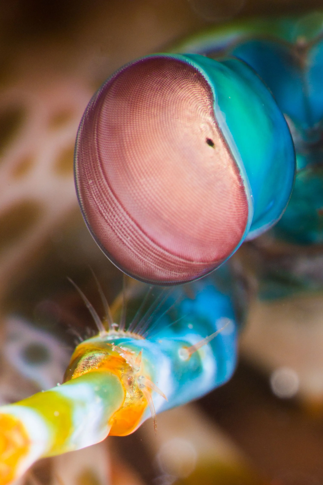
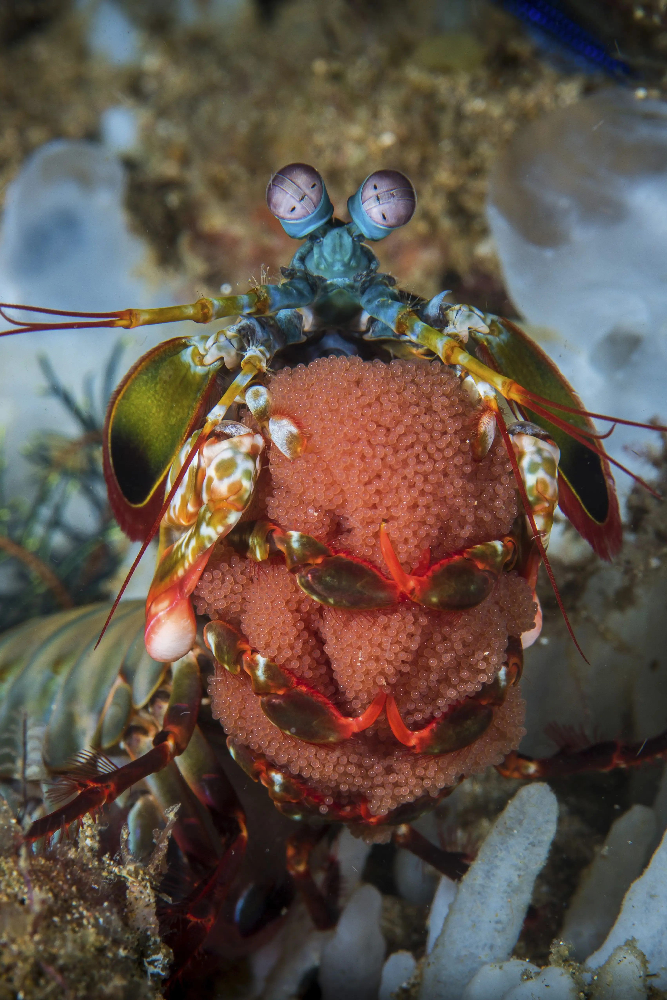

Fatos sobre o Stomatopoda

Inforações Gerais
O Stomatopoda, cujo nome científico é Odontodactylus scyllarus, é um predador ativo que caça presas com o auxílio de um sentido de visão muito apurado.
Apresentam uma grande variação de tamanho, que pode ir de poucos milímetros até aproximadamente 40 cm nas espécies maiores.
Eles vivem em fundo consolidado, lodoso ou ainda arenoso, onde cavam seus buracos ou aproveitam-se dos orifícios deixados por outros animais para neles se instalar.
São animais exclusivamente carnívoros, alimentando-se de camarões, caranguejos, moluscos, peixes e até mesmo outros da mesma ordem.
| Reino | Filo | Subfilo | Classe | Subclasse | Ordem |
| Animalia | Arthropoda | Crustacea | Malacostraca | Hoplocarida | Stomatopoda |
| Informações retiradas do https://pt.wikipedia.org/wiki/Stomatopoda | |||||
|---|---|---|---|---|---|
Fatos Incríveis
Visão
Os Stomatopodas têm a visão mais complexa do reino animal, superando até a das borboletas. Enquanto os humanos têm três tipos de fotorreceptores, os olhos do Stomatopoda têm entre 12 e 16 tipos de células fotorreceptoras.
Reprodução
Em média, um Stomatopoda vive 20 anos. Durante sua vida, ele pode se reproduzir de 20 a 30 vezes. Em algumas espécies, a única interação entre machos e fêmeas ocorre durante o acasalamento. A fêmea põe ovos em sua toca ou os carrega consigo. Em outras espécies, os camarões acasalam em relações monogâmicas e duradouras, com ambos os sexos cuidando dos ovos. Após a eclosão, a prole passa três meses como zooplâncton antes de mudar para a forma adulta.
Refrências
- https://www.greelane.com/pt/ci%c3%aancia-tecnologia-matem%c3%a1tica/animais-e-natureza/mantis-shrimp-facts-4582442/
- https://pt.wikipedia.org/wiki/Stomatopoda